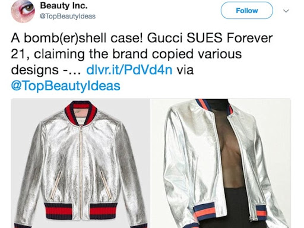
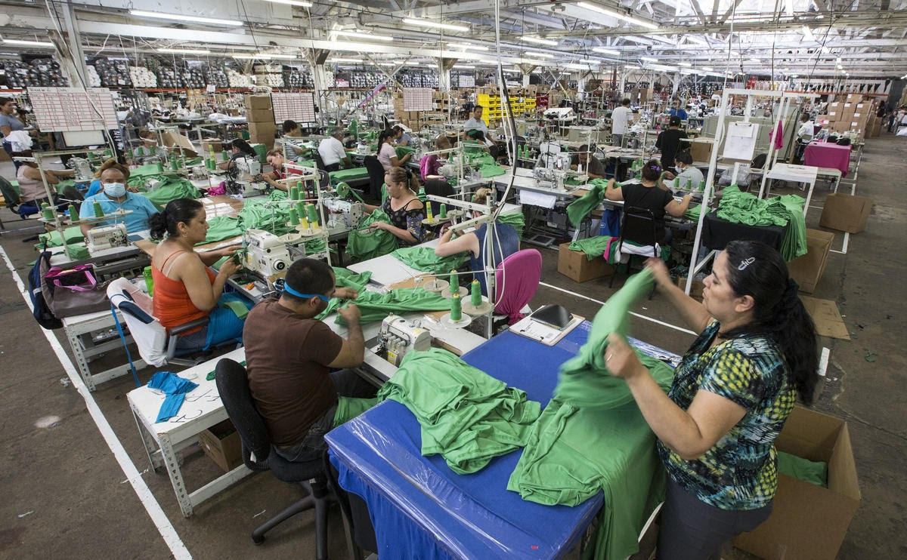
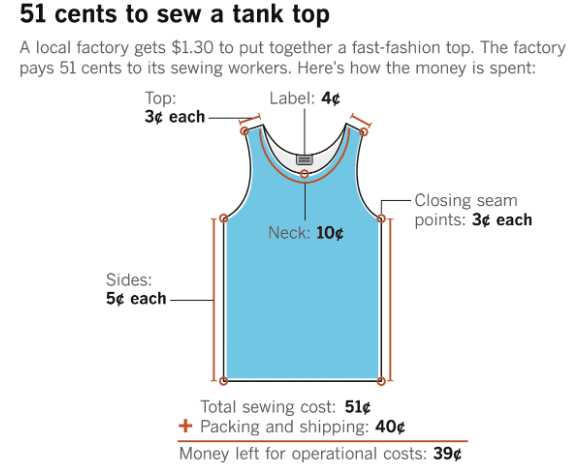

Gone Thrifting?
Fashion Week influences the latest styles, but how exactly do these looks become trends, appearing on racks inside shopping malls so quickly? In the midst of Fashion Week, it’s fitting to take a look at the fast fashion industry, an entity which allows shoppers to get their hands on their favorite trends and designs at an incredibly low price and within a very fast time frame. The concept of fast fashion is as follows: mass-market retailers, influenced by these latest trends, produce inexpensive and low quality clothing at a very quick pace. When styles fluctuate, these companies are able to quickly replicate the newest trends on their clothing in order to adhere to consumer’s changing preferences and taste. People continuously rebuy these types of clothes, mainly because they do not last long due to the extremely cheap fabric that is used to make them, thus resulting in a constant cycle of buying and wasting cheap clothing.

Fast fashion companies–such as Zara, Forever 21, and H&M–have the ability to make the latest fashion trends available to all, no matter one’s economic status or background. People of all demographics have access to the newest designs.Yet, this has repercussions. First, fast fashion companies have landed in hot water–on numerous different occasions–for copying designer looks straight from the runway, as seen in the above photos. In 2017, Gucci sued Forever 21 for copying their red and blue striped pattern, arguing that when companies like Forever 21 do this, it hurts both the revenue of Gucci and is also disrespectful to the designer because their original ideas are stolen, which they worked hard to create. Gucci has said in the past that Forever 21 designs are a “blatant exploitation" of their famous trademarks.
Despite the fact that fast fashion industries make fashion available to all, these companies are not doing well both in popularity and in profit recently. In 2019, Forever 21 filed for bankruptcy, after announcing that it would close up to 350 stores, including locations in the United States and overseas. In 2018, the stores revenue dropped $3.3 billion, and has released over 10,000 former employees from their jobs. Forever 21 has ceased operations in over 40 different countries.
But why has this shift occurred? Numerous factors have left these fast fashion companies incredibly weak in their tracks, with little to no leverage left over other clothing companies. Initially, the transition from in-store to online shopping was one of the most detrimental effects on stores like Forever 21, as people much prefer this easier way to shop, ordering from the couch and having delivered to their doorstep. In a recent study, consumers were seen to do over 60% of their shopping online. Online shopping is a direct threat to the physical stores. Yet even worse for these companies, other fast fashion industries solely based online have blossomed and grown; companies such as Asos and Fashion Nova–both online fast fashion companies with rapidly growing popularity–have threatened and hurt the economic success of the physical stores like Forever 21.
However there are deeper issues with fast fashion industries, which have caused American consumers to begin to turn away from their doors. Companies like Forever 21 and H&M merit ethical and environmental consequences as well. As said clearly before, the foundation of these companies is mass production. In order to keep up with this demand and produce at such a high pace, industries need to employ thousands of workers. The cost of labor must remain incredibly low, to allow these companies to profit from the cheap price of the garment. This is a vicious cycle; the company can only make profit from their cheap prices of clothing if they pay their workers even lower than what the garments are being sold for.
So how low do they go? The government looked into a Forever 21 dress which was priced at $24.90. However, if the company was paying the workers the minimum wage of $7.25, this dress should have been priced at $30.43. Fast fashion companies have been exposed for their unfair wages, poor working conditions, and child labor industries. In 2016, the U.S. Department of Labor investigated 77 LA garment factories, and found that workers were paid as low as $4 an hour for 10-hour days, at companies including Forever 21 and TJ Maxx. After forcing their workers to spend all day in these factories, they do not even provide them with a living wage. An example below outlines the $1.30 cost for a garment factory in Los Angeles to produce a tank top, while only proving the workers with 51 cents for their time and labor.
 
- Fashion production produces 10% of all of carbon emission in the world (more emission than international flights and maritime shipping combined).
- 85% of textiles end up in the landfill each year, many of which land in our oceans and harm ecosystems.
- Every second, the equivalent of one garbage truck full of clothing is sent to the landfill or burned.
- The fashion industry is the second largest consumer of water.
The declining popularity of these industries is due to the fact that Americans are becoming more conscious consumers, prioritizing ethical working conditions and sustainability over buying the newest piece of fashion. People have become more aware. Furthermore, consumers have begun to prioritize lifetime value over cheap quality. Stores like Forever 21 and Zara recieve complaints, regularly, about how their clothing is made with inexpensive material that commonly rips or breaks, not lasting long in someone’s closet at all.
However, it’s also critical to think about what happens when people decide to stop supporting these industries. Where do people, especially those with low income, shop if these are the only prices they can afford? Recycled clothing stores and thrift stores are the best answer and solution to this; stores such as Buffalo Exchange and online consignment companies such as Poshmark allow people to buy reused clothing at a discounted price, completely removing the labor and environmental impact that is created from producing a new unit of clothing. Another example of a company taking steps in the right direction is Reformation, a clothing company focused on sustainability. For example, the company is committed to producing almost all of their clothing out of natural, plant-based fibers which are rapidly renewable and not harmful for the earth. Fast fashion industries remind us of the importance of being aware of how and where our clothing comes from. Sustainability and social welfare have received more attention recently in regards to their place in the fashion industry–as they should–since these companies have been exposed for many unethical practices. Next time you reach for a Forever 21 tank top, maybe think twice about if you really need to support these industries.